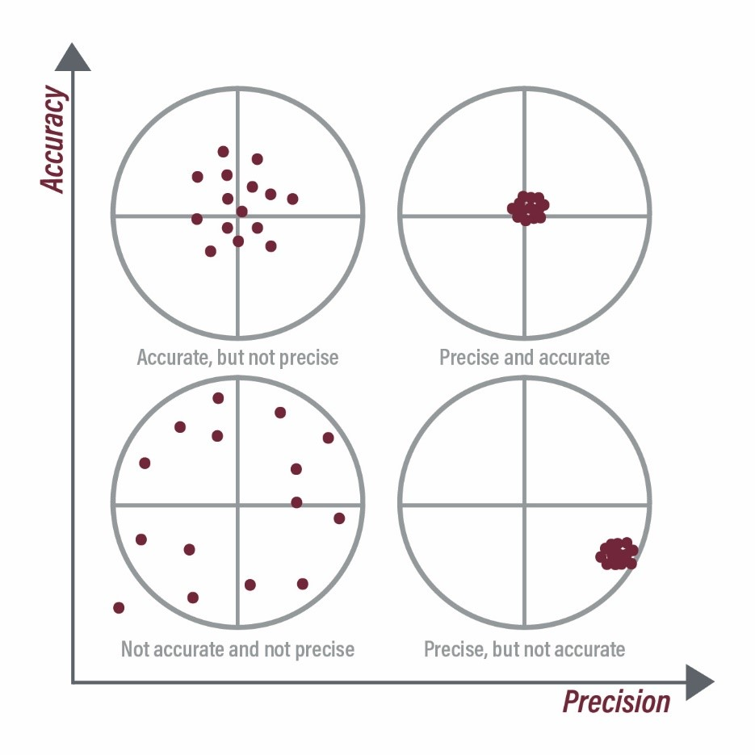
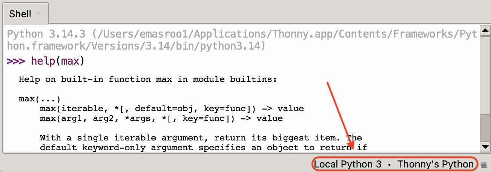

E21 Computer Engineering Fundamentals
September 15, 2026
Write a program and save to code.py. Your program should:
x seconds, where x is a small number less than one.from adafruit_circuitplayground.express import cpx
import time
x = 0.2
while True:
time.sleep(x)
# This part checks for button A
if cpx.button_a:
cpx.pixels[4] = (0,0,50)
print("Button A pressed")
else:
cpx.pixels[4] = (0,0,0)
# This part checks for button B
if cpx.button_b:
cpx.pixels[8] = (50,50,0)
print("Button B pressed")
else:
cpx.pixels[8] = (0,0,0)So far, we have used the same delay for the print statement and for the logic that checks the buttons
It is possible to use a different delay for both parts of the code
Run the following code, which will be part of HW 3.
from adafruit_circuitplayground.express import cpx
import time
print_freq = 3 # printing should occur once every <-- secs
loop_interval = 0.1 # while loop should run once every <-- secs
start_time = time.monotonic()
while True:
time.sleep(loop_interval)
now_time = time.monotonic()-start_time
# This part checks for button A
if cpx.button_a:
cpx.pixels[4] = (0,0,50)
else:
cpx.pixels[4] = (0,0,0)
# This part checks for button B
if cpx.button_b:
cpx.pixels[8] = (50,50,0)
else:
cpx.pixels[8] = (0,0,0)
if abs((now_time % print_freq) - print_freq) < loop_interval:
# now, print or not.
if cpx.button_a:
print("Button A is pressed")
if cpx.button_b:
print("Button B is pressed")
if not cpx.button_a and not cpx.button_b:
print("No button pressed")
When the true value is known:
These quantify the accuracy, not the precision
When the true value is not known a priori:
In Python, a function is a piece of code that is packaged into a single command, and can be ‘called’ — i.e., the code inside the function can be run using the name of the function.
The inputs to a function are called its arguments
The output of a function is said to be returned by the function.
A function with just one input:
A function with no inputs:
A function with two inputs:
In Python, functions can be placed in the same .py file as the rest of your code.
Another option is to create a separate file to store all of your functions.
Then, you can import functions using from <file name without .py> import <function name>
You should look up functions in:
Official Python documentation
Official Circuit Python documentation
The help command
>>> help(max)
Help on built-in function max in module builtins:
max(...)
max(iterable, *[, default=obj, key=func]) -> value
max(arg1, arg2, *args, *[, key=func]) -> value
With a single iterable argument, return its biggest item. The
default keyword-only argument specifies an object to return if
the provided iterable is empty.
With two or more positional arguments, return the largest argument.Note that you may need to switch to ‘Local Python’ because Circuit Python saves space by having smaller documentation files.

Write a function that determines the nth Fibonacci sequence number
Recall that the Fibonacci sequence is \[\{ 1, 1, 2, 3, 5, 8, 13, 21, ... \}\] where every number is the sum of the two preceding numbers in the sequence.
Hints:
append function adds on an element to the end of a listnth element of a list using name_of_list[n]name_of_list[-1].Write a program for the Circuit Playground Express that prints the value of \(g\) to the screen, using (1) the z-component of acceleration \(a_z\), and (2) the magnitude of acceleration \(\sqrt{a_x^2 + a_y^2 + a_z^2}\).
A function that calculates \(\sqrt{a^2 + b^2 + c^2}\)
Initialize an empty list
Decide on the frequency of data collection
Start collecting data on button press
Use a while or for loop to keep collecting data until another button press
from adafruit_circuitplayground.express import cpx
import time
def magnitude(a,b,c):
return (a**2 + b**2 + c**2)**(1/2)
# Create an empty list that will store the readings
readings_z = []
readings = []
# Time delay between measurements
delay = 0.1
while not cpx.button_a:
pass
# Collect data
while True:
accel_z = cpx.acceleration.z
accel = magnitude(cpx.acceleration.x, cpx.acceleration.y,cpx.acceleration.z)
print(accel_z,accel)
readings.append(accel)
readings_z.append(accel)
time.sleep(delay)
if cpx.button_b:
breakCharacterize the precision and accuracy of the on-board accelerometer
Look up the correct value of \(g\) at the website of the National Institute of Standards and Technology.
max, min, sumfrom adafruit_circuitplayground.express import cpx
import time
def magnitude(a,b,c):
return (a**2 + b**2 + c**2)**(1/2)
# Create an empty list that will store the readings
readings_z = []
readings = []
# Time delay between measurements
delay = 0.1
while not cpx.button_a:
pass
# Collect data
while True:
accel_z = cpx.acceleration.z
accel = magnitude(cpx.acceleration.x, cpx.acceleration.y,cpx.acceleration.z)
print(cpx.acceleration.x,cpx.acceleration.y,accel_z,accel)
readings.append(accel)
readings_z.append(accel)
time.sleep(delay)
if cpx.button_b:
break
# Do some calculations on 'readings'
g_true = 9.806
g_mean = sum(readings)/len(readings)
relative_error = abs(g_mean - g_true)/g_true * 100
spread = (max(readings)-min(readings))/g_mean * 100
print(f"The accelerometer measured {g_mean}, which is {relative_error:.2f} percent off from the true value")
print(f"The spread is {spread} percent")E21 • Fall 2026 • Lecture 05 • September 15, 2026 • ↩︎